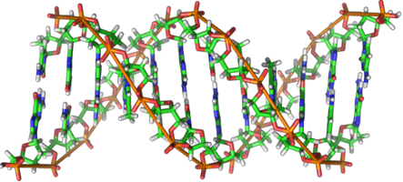

| C - The Broken DNA of Jack the Ripper |
DNA analysis allows the resolution of crimes committed in the distant past. Provided that there are biological remains of the criminals and the possible suspects, a proper comparison of DNA sequences can be used to identify the culprits. For example, the famous crimes of Jack the Ripper can be solved more than 120 years later thanks to DNA.

However, analyzing ancient DNA sequences is not an easy thing, since many parts of the sequences can be lost, mainly in the extremes of the sequences. As you should know, a DNA sequence can be represented as a list of letters: A, C, G, T. When we have some missing information of the DNA, we will use the character '-'. For example, a sequence such as: AC-CG-, means that the 3rd and 6th elements of the sequence are unknown, so they could correspond to any letter.
You have to help the police to identify Jack the Ripper's DNA. Given a list of DNA sequences, you have to identify which sequences have appeared previously in the list.
All the sequences have the same length. They consist of 5 possible characters: A, C, G, T, -. This last character, '-', can correspond to any other character.
For example, the sequence: AC-CG-, matches the sequence: A-A-GG. Both of them match with ACACGG. And the sequence: ------ would match any 6 characters sequence.
The first line of the input contains an integer, indicating the number of existing DNA sequences. This number can be up to 20000.
Each DNA sequence is described in a single line. This line consists of the characters: A, C, G, T, -. All the sequences have the same length, that will be no longer than 100 characters.
For each DNA sequence in the input, you have to determine if that sequence matches any other sequence that has appeared previously in the input. In that case, you have to output:
M: S1 S2 ... Sn
Where M is the number of the current DNA sequence, and S1, S2 ... Sn are the numbers of the previous sequences that match sequence M, in increasing order. Sequences are numbered starting with 1. For example, if the 3rd sequence matches the 1st and the 2nd sequences, you have to output:
3: 1 2
8
AC-CG-
A-A-GG
ACACGT
ACACGG
ACACAC
---TT-
------
ACACAC
2: 1
3: 1
4: 1 2
7: 1 2 3 4 5 6
8: 5 7